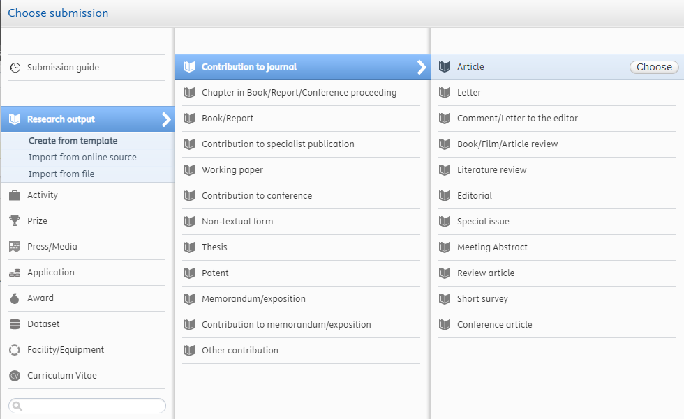
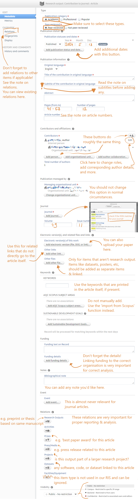

Development preview - do not use as a a guide!
These pages are under development. The content is far from complete. For the actual guides, visit the UT service portal page for the RIS.
Definition, identifiers, alternatives
Definition
A journal article is a peer-reviewed work published in a scientific journal. These items are relatively short in length; mostly between 5 and 20 pages. Articles published in non-scientific journals, like trade journals, require setting some different options — read the Non-scientific journal article page for more information.
Important unique identifiers
Unique identifiers are crucial for correct data entry. Make sure to always check that these are filled in correctly when adding an item to Pure. In almost all cases, a journal article should have a DOI, and the journal that published the article should have one or two ISSNs. It’s also helpful to look up (or register) ORCIDs - not only for yourself, but for any person related to this item.
Alternative options
If the item you want to add does not fit with the definition of a journal article, here are a few links to items that might be better suited:
For a complete overview of item types, see Overview of items. If you need additional support, please contact us.
Adding a journal article to the RIS
If you’ve never added an item to Pure before, it’s advised to first read the page Getting started with Pure
Category
Journal articles should be registered using the following category: Research Output → Contribution to journal → Article. 
The list of items in the category ‘Contribution to journal’ has a few categories that also look fitting for certain journal articles; however, only the ‘Article’ category is taken into consideration for analysis and reports on journal articles.
So, please do not add items to the following categories:
- Book/Film/Article review
- Literature review
- Review article
- Short survey
For information on the use of the category ‘Conference article’, check out that page.
Annotated guide
In this part, each field and option is explained. The most important information is shown using a screenshot of the form including annotations. Additional notes are available for additional context and explanations where needed.

Additional notes
Subtitles
Subtitles are metadata that aren’t used often in various databases, as they aren’t well-defined. Adding important title data here is not recommended. For example, if your article has a title like this:
My great journal article
an explanation of important things related to subject
it’s often best combine this into a single title (and add it to the ‘title’ field):
My great journal article: an explanation of important things related to subject
or:
My great journal article, an explanation of important things related to subject
The best way to avoid issues like this is to not use subtitles in your works at all, of course.
Automated import
see Import metadata from another source.
Relations between items
— text goes here